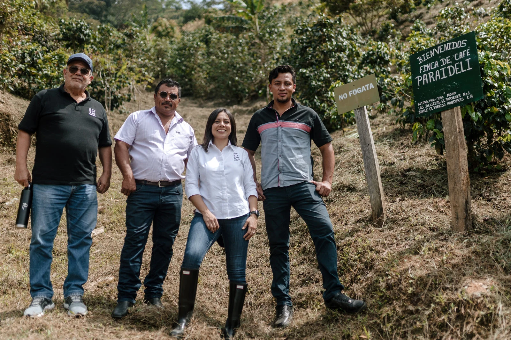

01 / IT STARTS AT ORIGIN
Not just coffee.
A connection.
From the mountains of Honduras to the moments that make your day.
Find your coffee01 / IT STARTS AT ORIGIN
From the mountains of Honduras to the moments that make your day.
Find your coffee
THE PEOPLE. THE PLACE. THE PURPOSE.NOT JUST WHERE. WHO.
Our coffee begins in Honduras. With the land that gives it character, and the people who bring it to life.
Spirit Origin sources directly and roasts at origin — keeping the connection from farm to cup at the heart of every bag.
Discover Spirit Origin ↗YOUR NEXT EVERYDAY EXTRAORDINARY
Explore current prices, availability and shipping in the official Spirit Origin store.
A DIRECT PATH FROM FARM TO CUP